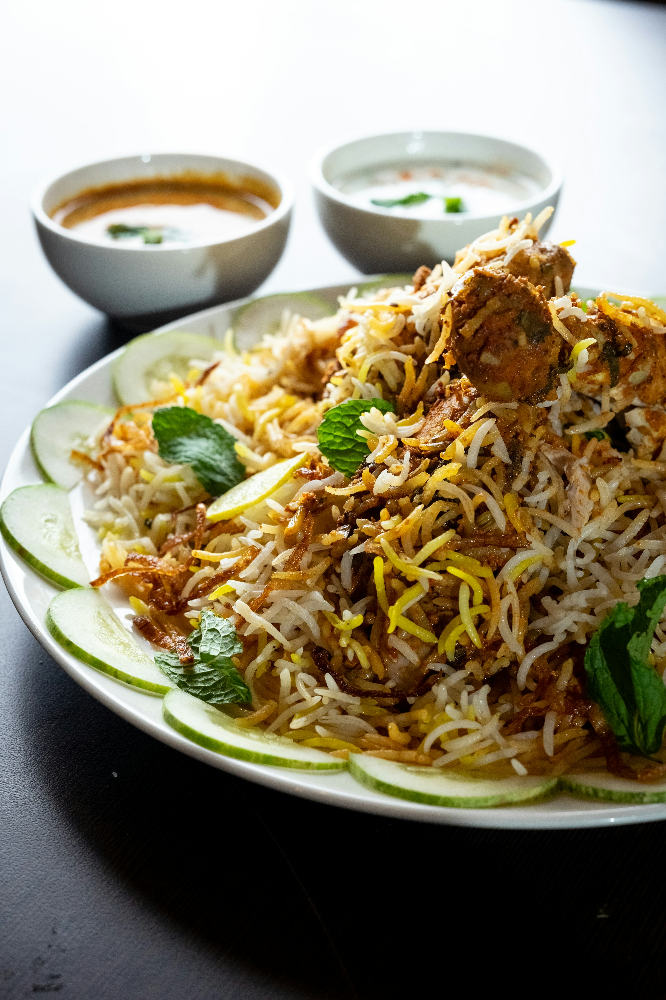

Chicken Biryani
A traditional South Asian rice dish packed with spices and rich flavor.

⏱ Prep: 20 min · Cook: 40 min · ⭐ Medium · 🍽 Serves 4
Ingredients
- 500g chicken (bone-in)
- 2 cups basmati rice
- 1 cup yogurt
- 2 onions (sliced)
- Ginger-garlic paste
- Biryani masala & whole spices
Method
- Soak rice for 30 minutes.
- Marinate chicken with yogurt and spices.
- Cook rice until 70% done.
- Prepare chicken gravy.
- Layer rice and chicken, then steam.
Chef’s Tip:
Use aged basmati rice for best aroma and texture.